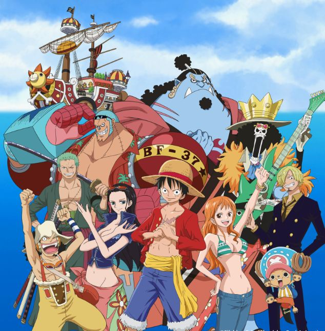

|  | |
One PieceOne Piece adalah sebuah seri manga Jepang yang ditulis dan diilustrasikan oleh Eiichiro Oda. Manga ini telah dimuat di majalah Weekly Shōnen Jump milik Shueisha sejak tanggal 22 Juli 1997, dan telah dibundel menjadi 105 volume tankōbon hingga Maret 2023. Ceritanya mengisahkan petualangan Monkey D. Luffy, seorang anak laki-laki yang memiliki kemampuan tubuh elastis seperti karet setelah memakan Buah Iblis secara tidak disengaja. Luffy bersama kru bajak lautnya, yang dinamakan Bajak Laut Topi Jerami, menjelajahi Grand Line untuk mencari harta karun terbesar di dunia yang dikenal sebagai "One Piece" dalam rangka untuk menjadi Raja Bajak Laut yang berikutnya. |
Haikyuu!!Haikyuu!!, yang diterbitkan di Indonesia dengan judul Haikyuu!! Fly High! Volleyball!, adalah sebuah seri manga shōnen asal Jepang yang ditulis dan diilustrasikan oleh Haruichi Furudate. Mengisahkan tentang siswa SMA bernama Shōyō Hinata, seorang siswa pendek yang bercita-cita menjadi pemain voli hebat seperti idolanya, "Raksasa Kecil." Dia berjuang bersama tim SMA Karasuno untuk menjadi yang terbaik di Jepang. Hinata dan tim Karasuno menghadapi rival tangguh serta berbagai tantangan. Dengan kerja keras dan semangat pantang menyerah, mereka berusaha membuktikan bahwa Karasuno bisa bangkit dan bersinar di dunia voli sekolah menengah. |
NarutoNaruto adalah manga karya Masashi Kishimoto yang diadaptasi menjadi anime oleh Studio Pierrot dan Aniplex. Serial ini tayang perdana di Jepang pada 3 Oktober 2002 di TV Tokyo dan berbagai stasiun lainnya. Naruto mengisahkan Uzumaki Naruto, ninja yang bercita-cita menjadi Hokage dan diakui oleh desanya. Ia menghadapi berbagai rintangan, bertemu teman, guru, serta musuh, dan mengungkap rahasia dunia shinobi. Naruto menghadapi berbagai tantangan, termasuk rivalitas dengan Sasuke. Dengan tekad dan dukungan teman-temannya, ia tumbuh menjadi ninja hebat dan akhirnya mencapai impiannya sebagai Hokage. |
Black CloverBlack Clover adalah sebuah seri manga shōnen bergenre fantasi asal Jepang yang ditulis dan diilustrasikan oleh Yūki Tabata. Ceritanya mengisahkan tentang seorang anak laki-laki bernama Asta yang lahir tanpa kekuatan sihir, suatu fenomena yang tidak normal di dunia tempatnya tinggal. Bersama dengan teman-temannya dari Banteng hitam, dia bercita-cita untuk menjadi Kaisar sihir. Manga ini dimuat berseri dalam majalah Weekly Shōnen Jump terbitan Shueisha sejak bulan Februari 2015. |
Sam Ratulangi, 350423 Manado, Indonesia
Telepon: 082123123
Email: test@test.com